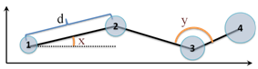

UBC’s
Eye Movement Data Analysis Toolkit (EMDAT)
User Manual
Version 0.8
Samad Kardan
skardan@cs.ubc.ca
Acknowledgement
Development of EMDAT has been done under the
supervision of Dr. Cristina Conati.
EMDAT is partially based on Python Eye Tracking
Library (PETL) developed by Nicholas FitzGerald.
Table of Contents
2.1 Files exported from Tobii Studio
4.1 Exporting files from Tobii studio
4.2 Generating ‘.seg’ and ‘.aoi’ files
4.3 Changing the BasicParticipant class
4.4 Project specific Configurations
4.4.1 Measuring the quality of eye gaze
samples in a Segment
4.4.2 Automatic Restoration of Invalid
samples
4.4.3 Automatic Splitting of Invalid
Segments
This manual describes how to use the EMDAT library for
analyzing eye tracking data collected by a Tobii eye tracker. It is important
for the reader to be familiar with eye tracking concepts and Tobii Studio
software before using EMDAT.
An eye-tracker provides eye-gaze information in terms
of fixations (i.e., maintaining eye-gaze at one point on the screen) and
saccades (i.e., a quick movement of gaze from one fixation point to
another), which are analyzed to derive a viewer’s attention patterns. EMDAT
uses a large set of basic eye-tracking features, described by [1] as the building blocks for comprehensive eye-data processing. These
features are built by calculating a variety of statistics upon the basic
eye-tracking measures described in Table 1.
Table 1. Description of basic eye tracking measures
|
Measure |
Description |
|
Fixation rate |
Rate of eye fixations per
milliseconds |
|
Number of Fixations |
Number of eye fixations
detected during an interval of interest |
|
Fixation Duration |
Time duration of an individual
fixation |
|
Saccade Length |
Distance between the two
fixations delimiting the saccade (d in Fig. 1) |
|
Relative Saccade Angles |
The angle between the two
consecutive saccades (e.g., angle y in Fig. 1) |
|
Absolute Saccade Angles |
The angle between a saccade
and the horizontal (e.g., angle x in Fig. 1) |
Of these measures, Fixation rate,
Number of Fixations and Fixation Duration are widely used (e.g., [2–5]); we also included Saccade Length (e.g.,
distance d in Figure 1), Relative Saccades Angle (e.g., angle y
in Figure 1) and Absolute Saccade Angle (e.g., angle x in Figure 1),
as suggested in [1], because these measures are useful to summarize trends in
user attention patterns within a specific interaction window (e.g., if the
user’s gaze seems to follow a planned sequence as opposed to being scattered).
Statistics such as sum, average and standard deviation can be calculated over
these measures with respect to: (i) the full
experiment window, to get a sense of a user’s overall attention; (ii)
specific areas of interest (AOI from now on), which identify parts of the
interface that are of specific relevance for understanding a user’s attention
processes.

Figure 1- Saccade based eye measures
We are using EMDAT for different projects in our research group. As of
September 2012, the following publications used EMDAT to analyze gaze data:
·
the results of using EMDAT to analyze gaze data in an interactive
simulation for learning is published in [6]
There are four types of files that are used by EMDAT,
which can be directly exported from the Tobii studio software. The file types
are mandatory for every project:
All-Data.tsv: This file contains all the data recorded by the eye-tracker. The
eye-tracker samples at a constant rate (e.g., every 8 milliseconds for a Tobii
T120 sampling at 120Hz), and records values for a wide variety of features
including gaze location, pupil dilation etc.
Fixation-Data.tsv: The individual points of gaze-location data output in the All-Data file
can be aggregated into "Fixations" according to a clustering
algorithm. The algorithm groups gaze samples which are close enough in distance
and time into Fixations, which have a location (centre of the corresponding
gaze samples), and a duration.
Note: When exporting the data, the Tobii
software allows you to choose one of the available methods for clustering
Fixations (varies in different versions of Tobii studio). Make sure you use the
same method for every subject in a given experiment, to ensure consistency.
In addition to All-Data.tsv and Fixation-Data.tsv, there are two
other file types that can be exported from Tobii studio which may be needed
depending on the project and the type of analysis intended:
Event-Data.tsv: This file includes all the non-gaze events, such as mouse-clicks and
key-presses. It also includes all the user-defined events that are added after
the experiment using Tobii studio. This is important for aligning the
experimental timing data with the eye-tracking data.
‘.aoi’ file: This file contains the definition of
the Areas of Interest that were defined and exported using the AOI tool in
Tobii studio. AOIs are defined as a single polygon. EMDAT also supports dynamic
AOIs, which are active at certain time intervals. For defining dynamic AOIs you
need to use an extended version of the ‘.aoi’ file as
defined in the next section.
Extended
‘.aoi’ file: EMDAT supports dynamic AOIs which
are active at certain time intervals. For defining dynamic AOIs you need to use
the extended version of the ‘.aoi’ file. The extended
version of '.aoi' files has pairs of lines for each
AOI of the form:
aoiname<tab>point1x,point1y<tab>point2x,point2y<tab>...<newline>
#<tab>start1,end1<tab>...<newline>
where in the
first line, aoiname is the name of the AOI, pointix and pointiy
define the x and y coordinates of the each vertex in the polygon that defines
boundaries of the AOI. In the second line, startj
and endj define the start and
end of each time interval that this AOI is active in milliseconds. The second
line starts with ’#' and is optional. If the second line does not exist the AOI
will be active throughout the whole session (a.k.a. a global AOI).
‘.seg’ file:
The '.seg' files have lines
of the form:
scene_name<tab>segment_name<tab>start_time<tab>end_time<newline>
Where scene_name is
the id of the Scene that this Segment belongs to, segment_name
is the id of the Segement, and start_time
and end_time determines the time interval for
the Segment.
All of the EMDAT files have been documented according
to Google’s documentation style for Python[1].
A Segment is a class that represents the smallest unit of aggregated eye data samples with a conceptual meaning
related to the experiment attached to it by the experimenter (e.g., performing
a sub task, the interval in which user was looking at the screen uninterrupted,
etc.). This class is the equivalent
of segments as defined in Tobii studio.
A Scene is a class that represents one scene (e.g., when
certain visual elements are present at the screen) in the experiment. The Scene
is designed to aggregate Segments related to a target conceptual entity or
activity in the experiment. A Scene should have at least one Segment assigned to it. From the technical point of
view, the Scene class is used to combine multiple Segments and calculate the aggregated features for this new
entity as a whole. This class is the equivalent of a scene as defined in Tobii
studio.
While Scene and Segment classes have many similarities
(e.g., they share a lot of features), it is important to note that they have
different intended purposes. The Segment class covers one basic continuous
interval of eye gaze samples and calculates the features for that interval. The
Scene class enables the researcher to look at the eye gaze data in a higher
level of abstraction and get away from the raw data by covering a set of
Segments. For example, if a researcher is interested in seeing how participants
react to a specific visual element (e.g., a virtual agent) that appears under
certain conditions on the screen, each instance of its appearance will be
covered by a Segment, whereas the overall picture is captured by a Scene that
includes all the relevant Segments. As another example, if two activities of
interest are happening across two separate Scenes, their respective Segments
enable the analysis of these two activities separately even if in some cases
they overlap.
In EMDAT, the boundary of an Area of Interest (AOI) is defined as a polygon on the screen. You can
optionally define a second polygon inside the first polygon to be excluded from
the AOI when initializing an AOI (see Figure 2). Please note
that the second polygon is not supported in the ‘.aoi’
file format.
Figure 2 - A sample AOI with outer and
inner polygons
An AOI can be always active (a global AOI) or can be active during certain time intervals (a
dynamic AOI). If there are dynamic AOIs in your experiment you will need to use
the extended version of ‘.aoi’ files for your project
as explained in section 4.2.
In order to calculate the features for an AOI instance, you need to create an AOI_Stat
instance and map it to a target AOI object by passing it to the AOI_Stat
constructor. The resulting AOI_Stat will
calculate all features related to the given AOI and store them for later reference.
Recording is a class used to hold all the data from one Recording (i.e., one complete experiment session) for one
participant. It also has some useful functions for reading different types of
files.
Participant is the parent class for a project specific class that
holds the information for one Participant in the experiment. There are some
project specific functionalities that should be overridden by the child class
in order to use EMDAT. This class is the only component of EMDAT that is not
fully implemented by design in order to address the needs of different
projects. The following two methods cover the project specific aspects of
EMDAT:
Partition: This method is
responsible for generating the list of Scenes and their corresponding Segments.
Please see the BasicParticipant class for a sample
implementation of this function that reads ‘.seg’
files and generates the Scene list.
read_participants: This method is responsible for generating the full
name of the files used for each participant (e.g., the full name of the
‘All-Data.tsv’ file for the first participant is ‘P1_All-Data.tsv’ and so
forth). Then it generates a list of the Participant objects by passing the file
names to the Participant’s constructor method.
EMDAT calculates a large number of features for each
Segment/Scene. In this section we will list them and describe them briefly.
These features are based on the eye tracking measures described in section 1.1. All
the available features can be accessed through get_features() method
that returns two lists one with the feature names and another with their
corresponding values.
EMDAT calculates 15 general features for each
Segment/Scene. These features are the only features that can be extracted
without defining any AOIs. For a Segment/Scene called S these features and
their meaning will be:
'length': Duration of S in milliseconds.
'numfixations': Number of fixations in S
'fixationrate': Number of fixations in S over time
'sumfixationduration', 'meanfixationduration' and 'stddevfixationduration': Sum, average and standard deviation
for duration of fixations in S
'sumpathdistance', 'meanpathdistance' and 'stddevpathdistance': Sum, average and standard deviation
for length of saccades in S
'sumrelpathangles', 'meanrelpathangles' and 'stddevrelpathangles': Sum, average and standard deviation
for relative angles between consecutive saccades in S
'sumabspathangles', 'meanabspathangles' and 'stddevabspathangles': Sum, average and standard deviation
for absolute angles saccades make with the horizontal line in S
In addition to general features, EMDAT also calculates
a set of features for each of Segment/Scene S’s active AOIs. In order to
calculate these features EMDAT needs AOI definition information (i.e., at least
one ‘.aoi’ file). These features can be grouped into
two categories:
·
Fixation-based features
·
Transition-based features
For an AOI called A, the fixation-based features will
be:
'numfixations': Number of fixations in S that are
inside A
'fixationrate': Number of fixations in S that are
inside A over time
'proportionnum': Proportion of fixations in S that
are inside A over total fixations in S.
'totaltimespent': Sum of the duration of fixations in
S that are inside A (i.e., time spent looking inside A during S) in
milliseconds.
'proportiontime': Proportion of time spent looking
inside A during S over total duration of S.
'longestfixation': Longest fixation inside A during S.
'timetofirstfixation': Time (ms) before first fixation
inside A during S
'timetolastfixation': Time (ms) of last fixation inside A
during S
A transition is a saccade with its start fixation in
one AOI and the end fixation in another AOI. The transition-based features will
be calculated based on transitions from all other active AOIs in S to A. For
each AOI, the following two features will be calculated for A:
Numtransfrom<aid>: Number of transitions from the AOI identified by aid
to A.
Proptransfrom<aid>: Proportion of transitions from the AOI identified by aid
to A over total transitions in S.
As explained in Chapter 2, in order to use EMDAT on
your data, you will need to export ‘All-Data.tsv’, ‘Fixation-Data.tsv’
and ‘Event-Data.tsv’ files for each participant in your experiment.
Please refer to your Tobii studio manual for details of how this can be done.
The other two types of information that is needed by
EMDAT are the definition of AOIs (‘.aoi’ file) and
the definition of Scene and Segments (‘.seg’ files).
If you are using AOIs that are active throughout the
experiment for one user, then you can easily define and export AOIs using AOI
tool in Tobii studio. However, if your AOIs are active only in certain time
intervals for each user, you may need to create customized ‘.aoi’ files for each user according to the extended ‘.aoi’ format as explained in section 2.2.
When it comes to defining Scene and Segments,
depending on the experiment design you can have a very basic one line ‘.seg’ file for each user such as:
MainScene<tab>Seg1<tab>0<tab>120000<newline>
This line defines one Scene with only one Segment that
covers the whole experiment for the user (120 seconds in the above example).
You can also have more complex set of Scenes with multiple Segments or even
Scenes with overlapping time intervals. All these different designs are
supported by the ‘.seg’ file format described in
Section 2.2.
The EMDAT distribution includes an example
implementation of the Participant class, called BasicParticipant.
This class implements a typical scenario where all the input files are provided
and the experiment only includes general AOIs. You can directly use this code
for your project if you have a similar use case. The only change that may be
necessary is in the read_participants
method where the full names of the files are generated.
If you have a more complicated scenario you will need to implement a more complicated Partition method that generates the Scene list based on the
‘Events-Data.tsv’ files and/or some external log files generated by the
software that was under study. It is important to note that you may need to add
a mechanism to generate ‘.aoi’ files for your dynamic
AOIs as well.
EMDAT uses a large number of parameters that enables
the researchers to customize different aspects of the process of calculation of
features without any need for any changes in the code. In this section, we will
first explain the specific concepts regarding how EMDAT handles invalid eye
tracking samples and then look at the list of the parameters EMDAT uses and
their meaning.
The collection of eye-tracking data is prone to error.
This is particularly true for eye-trackers that are not head-mounted,
especially if during the experiment the movement of the participant’s head is
not restricted (e.g., by a chin rest). Data can be lost due to the subject
looking off the screen, or due to loss of calibration
from rapid movement, blinking or other such events.
Segments in which a large amount of data has failed to
be captured could skew results to an unacceptable degree. Therefore, it is necessary
to remove these Segments from analysis. There are two ways in which validity
can be determined:
1. A Segment is valid as long as a certain proportion
of time-samples (e.g., 90%) contain valid data.
2. A Segment is valid as long as there is no period of
time (e.g., 300ms) in which there is no collected data.
Each of these has advantages and disadvantages. Using
the first method will ensure that there is solid data for the whole Segment.
However, it might unnecessarily screen out Segments where the data is largely
valid, but there are many very small discontinuities throughout (for example if
1 time-sample in 10 is invalid but these are equally distributed throughout,
this should not be a problem). The second method will ensure that there are no
large gaps in the data for a given Segment.
In the following two sections we will describe two
different ways that EMDAT uses to improve the quality of the Segments.
“Restored samples” are samples that are initially
deemed invalid, but which can be restored to be part of a Fixation. The
rationale for such restorations is as follows: if the user was fixating at the
same point before and after a short period of “lost” gaze data, it can be
assumed that the user was looking at that same point during this “loss” period.
The auto-partition option enables EMDAT to automatically
split Segments of low sample quality into two new sub-Segments, by discarding
the largest gap of invalid samples for a "Segment". EMDAT will
continue to perform the splitting on the Segments until there is no gap larger
than MAX_SEG_TIMEGAP left in the data.
Each project should assign a value to the following
parameters that are found in the params.py module. While most of the parameters
can be left to their default current values, it is important that a researcher
goes through all of them and ensures that the behaviour dictated by these
values is what s/he is expecting from EMDAT.
|
Parameter |
Description |
|
EYELOGDATAFOLDER |
the folder that has the files exported from Tobii |
|
EXTERNALLOGDATAFOLDER |
the folder that has the external log files (if any) |
|
NUMBEROFEXTRAHEADERLINES |
number of extra lines at the beginning of the files
exported from Tobii this is specific to the experiment and is based on the
number of control variables defined in Tobii studio for the experiment (e.g.,
age, vision, etc.) and is recorded at the beginning of the files for each
participant |
|
FIXATIONHEADERLINES |
number of lines at the beginning of the 'Fixation-Data'
files exported from Tobii before the actual data |
|
ALLDATAHEADERLINES |
number of lines at the beginning of the 'All-Data' files
exported from Tobii before the actual data |
|
EVENTSHEADERLINES |
number of lines at the beginning of the 'Event-Data' files
exported from Tobii before the actual data |
|
MEDIA_OFFSET |
The coordinates of the top left corner of the window
showing the interface under study. (0,0) if the interface was in full screen
(default value) |
|
featurelist |
A list of non-AOI features. It should be a subset of the
following list: ['numsegments','length','numfixations','fixationrate', 'meanfixationduration','meanpathdistance','meanrelpathangles','meanabspathangles',
'stddevabspathangles','stddevfixationduration', 'stddevpathdistance','stddevrelpathangles', 'numsamples','sumabspathangles','sumfixationduration', 'sumpathdistance','sumrelpathangles'] |
|
aoinames |
list of the AOI names |
|
aoigeneralfeat |
A list of general AOI features. It should be a subset of
the following list: ['fixationrate','numfixations','totaltimespent', 'proportionnum','proportiontime', 'longestfixation', 'timetofirstfixation','timetolastfixation'] |
|
aoitransfrom |
A list of frequency-based features for transitions between
AOIs. It is populated automatically based on the aoinames. |
|
aoiproportion |
A list of proportion-based features for transitions
between AOIs. It is populated automatically based on the aoinames. |
|
aoifeaturelist |
a list of all AOI-based
features which is populated automatically based on aoigeneralfeat, aoitransfrom
and aoiproportion. |
|
VALID_PROP_THRESH |
the minimum proportion of valid samples for a Segment or
Scene to be considered valid |
|
VALID_TIME_THRESH |
the maximum gap size (ms) allowable in samples for a
Segment or Scene to be considered valid |
|
|
|
|
VALIDITY_METHOD |
1: porportion; 2:time gap; 3: porportion with (valid + restored) samples |
|
|
|
|
MAX_SEG_TIMEGAP |
maximum gap size (ms) allowable in a segment with
auto-partition option |
|
MINSEGSIZE |
|
|
INCLUDE_HALF_FIXATIONS |
A Boolean value determining if a Fixation extends between
two consecutive Segments, should it be included in those Segments or not |
|
DEBUG |
|
|
NONTEMP_FEATURES_SEG and
NONTEMP_FEATURES_AOI |
Two predefined lists of general and AOI-based features
that are not accumulative and are controlled for time spent |
After implementing a Participant class with the
required methods, you will need a script to generate a list of Participant
objects and then extract the features for them.
The module testBasic.py contains an example of such script that runs
EMDAT for two sample participants and writes the feature vales in a tab-separated
format in ‘smaple_features.tsv’ file.
1. Goldberg, J.H., Helfman, J.I.: Comparing Information Graphics: A
Critical Look at Eye Tracking. Proceedings of the 3rd BELIV’10 Workshop: BEyond
time and errors: novel evaLuation methods for Information Visualization. pp.
71–78. ACM, Atlanta, GA, USA (2010).
2. Hegarty, M., Mayer, R.E., Monk, C.A.:
Comprehension of Arithmetic Word Problems: A Comparison of Successful and
Unsuccessful Problem Solvers. Journal of Educational Psychology. 87, 18–32
(1995).
3. Canham, M., Hegarty, M.: Effects of knowledge
and display design on comprehension of complex graphics. Learning and
Instruction. 20, 155–166 (2010).
4. Jarodzka, H., Scheiter, K., Gerjets, P., van
Gog, T.: In the eyes of the beholder: How experts and novices interpret dynamic
stimuli. Learning and Instruction. 20, 146–154 (2010).
5. Loboda, T.D., Brusilovsky, P.: User-adaptive
explanatory program visualization: evaluation and insights from eye movements.
User Modeling and User-Adapted Interaction. 20, 191–226 (2010).
6. Kardan, S., Conati, C.: Exploring Gaze Data
for Determining User Learning with an Interactive Simulation. In: Masthoff, J.,
Mobasher, B., Desmarais, M., and Nkambou, R. (eds.) User Modeling, Adaptation,
and Personalization. pp. 126–138. Springer Berlin / Heidelberg (2012).